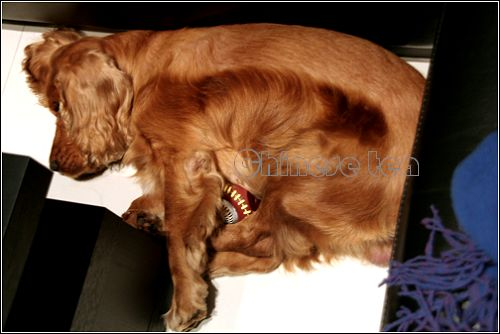

Luke怀抱着它的玩具睡着了。

洗澡的Luke非常配合。
不管大狗小狗，一洗澡就都成腊肠了。
哈哈，笑坏我了，给正在洗澡的狗狗拍照，你有没有发现它那表情很无奈呀…
可爱的狗狗，洗澡洗得有点夸张，到处都是泡沫。呵呵
今天心血来潮，搜索“中国茶”，竟然发现“茶”还在更新。6年了，我从大学生，到找工作，换工作，换城市，换女友，买房子一路过来，感叹岁月蹉跎。回想起刚来“茶”上看的小说《跨越身体的国境线》时的情怀，现在只会担心完成不了银行任务会被炒，担心买的房子发展商会出问题，担心经济还是这么糟糕，担心的问题有太多！有句话“尽人事，听天命”，可我依旧忧心….
Luke掉毛很厉害吗？除了常洗澡，平时您怎么打理他的长毛？
我最怕刚给狗狗洗完澡 它就站起来抖毛
6年，不长不短，我也发生了很多变化~
Luke背上的毛是剔掉的，掉毛现象还好啦。
Luke也喜欢抖毛，尤其是在茶几附近，你正喝着热茶，它忽然浑身上下的抖毛，叫人郁闷~
我养来看门的狗被大客车给… 看着平时活蹦乱跳的它被放在了一只水桶里…
一直都在关注茶，只是没有想着去留言什么的，就像一个神交已久的朋友，远远看着就觉得满足了！祝福“茶”越走越远！
存档只读，评论已关闭。
Name (required)
Email (will not be published) (required)
Website
« 陌上花开，缓缓归。 | 《Smart People》 »

9 Responses to “洗。澡。快。乐。”
2008-10-03
不管大狗小狗，一洗澡就都成腊肠了。
2008-10-03
哈哈，笑坏我了，给正在洗澡的狗狗拍照，你有没有发现它那表情很无奈呀…
2008-10-03
可爱的狗狗，洗澡洗得有点夸张，到处都是泡沫。呵呵
2008-10-04
今天心血来潮，搜索“中国茶”，竟然发现“茶”还在更新。6年了，我从大学生，到找工作，换工作，换城市，换女友，买房子一路过来，感叹岁月蹉跎。回想起刚来“茶”上看的小说《跨越身体的国境线》时的情怀，现在只会担心完成不了银行任务会被炒，担心买的房子发展商会出问题，担心经济还是这么糟糕，担心的问题有太多！有句话“尽人事，听天命”，可我依旧忧心….
2008-10-04
Luke掉毛很厉害吗？除了常洗澡，平时您怎么打理他的长毛？
2008-10-04
我最怕刚给狗狗洗完澡
它就站起来抖毛
2008-10-04
6年，不长不短，我也发生了很多变化~
Luke背上的毛是剔掉的，掉毛现象还好啦。
Luke也喜欢抖毛，尤其是在茶几附近，你正喝着热茶，它忽然浑身上下的抖毛，叫人郁闷~
2008-10-06
我养来看门的狗被大客车给…
看着平时活蹦乱跳的它被放在了一只水桶里…
2008-10-07
一直都在关注茶，只是没有想着去留言什么的，就像一个神交已久的朋友，远远看着就觉得满足了！祝福“茶”越走越远！
Leave A Reply
存档只读，评论已关闭。